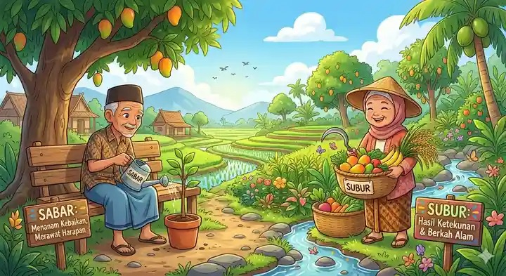
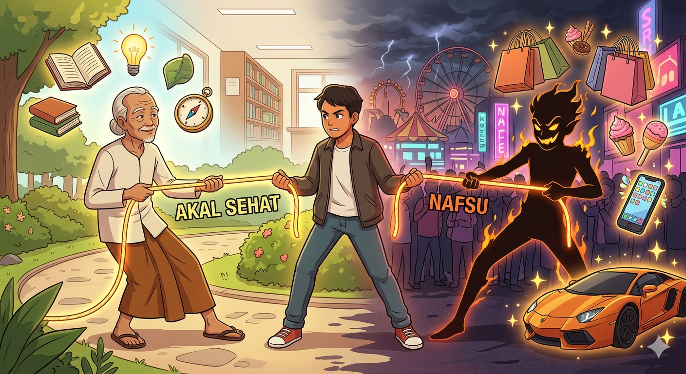

Menemukan Kedamaian dengan Mengendalikan Keinginan
Sebuah portal filsafat spiritual yang mengupas tuntas keterkaitan erat antara konsep kesabaran yang subur dengan pertarungan akal sehat melawan bisikan nafsu dalam kehidupan modern.
Galeri Filosofi Visual
Eksplorasi representasi artistik dari konsep Sabar, Subur, Akal Sehat, dan Nafsu.

Menanam Sabar, Memanen Subur
Visualisasi seorang kakek menyiram benih harapan dengan sabar di sisi kiri, dan seorang nenek yang bahagia memanen hasil alam yang melimpah dan subur di sisi kanan. Mengajarkan bahwa kesabaran bukanlah sikap pasif, melainkan kerja keras yang konsisten.

Pergulatan Akal Sehat dan Nafsu
Pertarungan sengit di mana seorang pemuda ditarik oleh dua kekuatan. Di kiri, sosok orang tua bijaksana (Akal Sehat) dengan simbol buku, cahaya, dan kompas. Di kanan, iblis bayangan hitam membara (Nafsu) yang memikat dengan mobil mewah, belanjaan, gadget, dan kesenangan duniawi yang fana.
Arsip Dialog Kebijaksanaan
Naskah lengkap percakapan antara User dan Asisten Kecerdasan tentang dualitas kehidupan.
Filosofi Hidup dari Sepotong Tanah
Proses alam menumbuhkan pohon rindang dari benih adalah cerminan dari konsep sabar dan subur. Banyak manusia menginginkan hasil instan, namun melupakan pentingnya waktu.
Pergulatan Jiwa: Siapa yang Menjadi Pemimpin?
Akal sehat berasal dari kata bahasa Arab 'aqala yang artinya mengikat atau menahan. Sebaliknya, nafsu adalah fitrah motor penggerak emosi manusia.
| Karakteristik | Akal Sehat 🧠 | Nafsu (Hawa) 🌊 |
|---|---|---|
| Fungsi | Sebagai hakim / pengemudi | Sebagai mesin penggerak |
| Visi | Jangka panjang & Keselamatan Akhirat | Kesenangan instan saat ini juga |
Tiga Tingkatan Nafsu dalam Al-Qur'an:
- Nafsu Ammarah: Jiwa liar yang terus-menerus mendesak kepada kejahatan dan kepuasan fana.
- Nafsu Lawwamah: Jiwa yang mulai sadar, menyesal, dan mencela diri sendiri setelah berbuat dosa.
- Nafsu Mutmainnah: Jiwa tenang yang damai karena tunduk sepenuhnya kepada syariat Allah.
Dilema Layar Kaca
Algoritma modern diprogram untuk merangsang kesenangan instan (pujian/Likes). Nafsu menuntut kita membuka notifikasi segera saat HP berbunyi, sedangkan akal sehat berjuang menahan diri demi prioritas tugas utama kita.
Dilema Keuangan
Keinginan belanja impulsif (*impulsive buying*) akibat tawaran tren sering kali bertentangan dengan kebutuhan jangka panjang. Mendahulukan melunasi tagihan bulanan adalah simbol kematangan akal sehat atas hawa nafsu.
Ada tiga pilar utama yang diajarkan Islam untuk memperkuat stamina akal sehat dalam meredam nafsu:
Melatih fisik menolak kenikmatan dasar agar jiwa mengeras tangguh terhadap godaan lain.
Secara berkala mengaudit niat dan tindakan harian sebelum tidur demi menajamkan nurani.
Meruntuhkan ilusi kesenangan instan dunia dengan menyadari semua hal ada hisabnya.
Alat Muhasabah Interaktif
Uji persentase kekuatan Akal Sehat vs Nafsu Anda berdasarkan skenario pengambilan keputusan sehari-hari.
Bagaimana Anda bereaksi saat sedang fokus bekerja dan ada bunyi notifikasi media sosial masuk ke ponsel Anda?
Hasil Analisis Muhasabah
Rekomendasi analisis personal Anda akan muncul di sini berdasarkan pilihan jawaban Anda.
Hymn Refleksi: "Duri di Kebun"
Kombinasi Neo-Soul lembut (Sabar & Subur) yang perlahan runtuh menjadi atmosfer Horor (Nafsu).
Duri di Kebun
Sisi Lain Pagi • Eksperimental
Menanam benih di kebun hati,
Sirami sabar, tunas pun subur.
Akal membimbing, menuntun pagi...
Cari Kebijaksanaan
Temukan kutipan, dalil, dan petunjuk praktis tentang cara menyeimbangkan akal sehat serta bersikap sabar.
Kanal Inspirasi Islami & Logika
Tonton ceramah inspiratif dan kajian mendalam untuk meningkatkan daya tahan pikiran.
Memutar Judul Video
Mensimulasikan pemutaran konten multimedia berkualitas tinggi untuk meningkatkan ilmu spiritual Anda.
Seni Mengendalikan Amarah dan Hawa Nafsu di Era Modern
Ustadz Hikmah Wijaya • 2.4K views
Keajaiban Filosofis: Mengapa Sabar Bisa Menjadikan Anda Subur?
Dr. Syarifudin Al-Rasyid • 8.1K views
Praktik Muhasabah: Tips Audit Jiwa Sebelum Tidur
Ustadzah Aisyah Rahma • 15K views
Melawan Candu Digital: Menyelamatkan Akal Sehat Anak Muda
Filsuf Digital Indon • 44K views